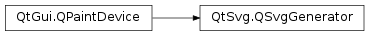

QSvgGenerator¶
Synopsis¶
Functions¶
- def
description() - def
fileName() - def
outputDevice() - def
resolution() - def
setDescription(description) - def
setFileName(fileName) - def
setOutputDevice(outputDevice) - def
setResolution(dpi) - def
setSize(size) - def
setTitle(title) - def
setViewBox(viewBox) - def
setViewBox(viewBox) - def
size() - def
title() - def
viewBox() - def
viewBoxF()
Detailed Description¶
The
PySide2.QtSvg.QSvgGeneratorclass provides a paint device that is used to create SVG drawings.This paint device represents a Scalable Vector Graphics (SVG) drawing. Like
PySide2.QtPrintSupport.QPrinter, it is designed as a write-only device that generates output in a specific format.To write an SVG file, you first need to configure the output by setting the
PySide2.QtSvg.QSvgGenerator.fileName()orPySide2.QtSvg.QSvgGenerator.outputDevice()properties. It is usually necessary to specify the size of the drawing by setting thePySide2.QtSvg.QSvgGenerator.size()property, and in some cases where the drawing will be included in another, thePySide2.QtSvg.QSvgGenerator.viewBox()property also needs to be set.generator = QSvgGenerator() generator.setFileName(path) generator.setSize(QSize(200, 200)) generator.setViewBox(QRect(0, 0, 200, 200)) generator.setTitle(QObject.tr("SVG Generator Example Drawing")) generator.setDescription(QObject.tr("An SVG drawing created by the SVG Generator Example provided with Qt."))Other meta-data can be specified by setting the
title,descriptionandresolutionproperties.As with other
PySide2.QtGui.QPaintDevicesubclasses, aPySide2.QtGui.QPainterobject is used to paint onto an instance of this class:painter = QPainter() painter.begin(generator) ... painter.end()Painting is performed in the same way as for any other paint device. However, it is necessary to use the
QPainter.begin()andPySide2.QtGui.QPainter.end()to explicitly begin and end painting on the device.The SVG Generator Example shows how the same painting commands can be used for painting a widget and writing an SVG file.
See also
PySide2.QtSvg.QSvgRendererPySide2.QtSvg.QSvgWidgetQt SVG C++ Classes
-
class
PySide2.QtSvg.QSvgGenerator¶ Constructs a new generator.
-
PySide2.QtSvg.QSvgGenerator.description()¶ Return type: unicode
-
PySide2.QtSvg.QSvgGenerator.fileName()¶ Return type: unicode
-
PySide2.QtSvg.QSvgGenerator.outputDevice()¶ Return type: PySide2.QtCore.QIODevice
-
PySide2.QtSvg.QSvgGenerator.resolution()¶ Return type: PySide2.QtCore.int
-
PySide2.QtSvg.QSvgGenerator.setDescription(description)¶ Parameters: description – unicode
-
PySide2.QtSvg.QSvgGenerator.setFileName(fileName)¶ Parameters: fileName – unicode
-
PySide2.QtSvg.QSvgGenerator.setOutputDevice(outputDevice)¶ Parameters: outputDevice – PySide2.QtCore.QIODevice
-
PySide2.QtSvg.QSvgGenerator.setResolution(dpi)¶ Parameters: dpi – PySide2.QtCore.int
-
PySide2.QtSvg.QSvgGenerator.setSize(size)¶ Parameters: size – PySide2.QtCore.QSizeSee also
-
PySide2.QtSvg.QSvgGenerator.setTitle(title)¶ Parameters: title – unicode See also
-
PySide2.QtSvg.QSvgGenerator.setViewBox(viewBox)¶ Parameters: viewBox – PySide2.QtCore.QRectF
-
PySide2.QtSvg.QSvgGenerator.setViewBox(viewBox) Parameters: viewBox – PySide2.QtCore.QRect
-
PySide2.QtSvg.QSvgGenerator.size()¶ Return type: PySide2.QtCore.QSize
-
PySide2.QtSvg.QSvgGenerator.title()¶ Return type: unicode
-
PySide2.QtSvg.QSvgGenerator.viewBox()¶ Return type: PySide2.QtCore.QRectReturns
PySide2.QtSvg.QSvgGenerator.viewBoxF().toRect().
-
PySide2.QtSvg.QSvgGenerator.viewBoxF()¶ Return type: PySide2.QtCore.QRectF
© 2018 The Qt Company Ltd. Documentation contributions included herein are the copyrights of their respective owners. The documentation provided herein is licensed under the terms of the GNU Free Documentation License version 1.3 as published by the Free Software Foundation. Qt and respective logos are trademarks of The Qt Company Ltd. in Finland and/or other countries worldwide. All other trademarks are property of their respective owners.